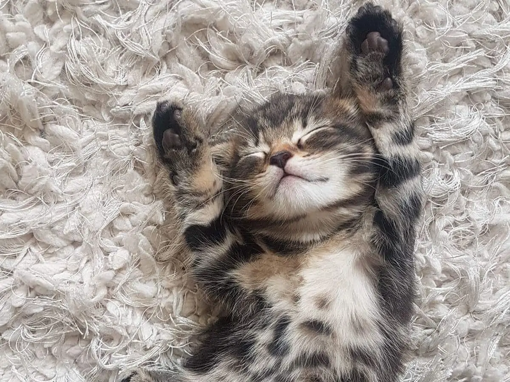
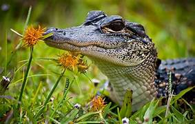

Every rescued animal deserves a second chance. By adopting, you’re not just bringing home a pet — you’re giving an injured or abandoned animal a safe place to recover, feel loved, and start again. Small actions can make a real difference.

Thousands of animals are abandoned every year due to injury, neglect, or loss of habitat. Adoption and rescue efforts reduce overcrowding in shelters and give animals a chance to survive and thrive instead of being forgotten.